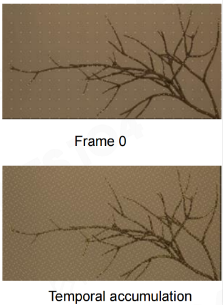

Game104MordernGameEngine
Table of Contents
- Game104MordernGameEngine
Game104MordernGameEngine note.
<!– more –>
Game104MordernGameEngine
Dynamic Global Illumination and Lumen
简介
当前硬件的 Ray Tracing 依然很慢
- Nvidia 3070 显卡只支持每个像素发射一条 ray
- 游戏中户外场景：每个像素需要 100 条 ray
- 游戏中室内场景：每个像素需要 500 条以上的 ray
采样问题很难
之前的实时渲染采用 Irradiance Fields 来解决该问题, 其有如下一些问题：
- 漏光和过度遮挡 (Leaking and over-occlusion)
- Probe 放置很密 (Probe placement)
- 光照更新很慢 (Slow lighting update)
- 效果看起来很平 (Distinctive flat look)
无法有足够样本，就会导致噪声，之前实时渲染采用 屏幕空间减噪(Screen Space Denoiser) 来移除噪声，其有如下一些问题：
- 一些室内场景噪声太多，减噪也无能为力 (Too noisy in many difficult indoor cases)
- 噪声不是恒定的，会引起画面抖动 (Noise is not constant)
在紧贴看到物体的表面，以低分辨率方式放置 Probe，用这些 probe 照亮所有的像素 （Low-res filtered screen space probes lit full pixels）
- 16x16 个像素放置一个 probe
总体流程
下面列出 Lumen 的 Indirect Diffuse 总体执行流程，注意不包括 Translucency Volume GI 和 Reflections：
Lumen Scene Update
- 根据 Mesh Cards 生成 Surface Cache
Lumen Scene Lighting
- Surface Cache Direct Lighting
- Radiosity Indirect Lighting
- Direct Lighting + Indirect Lighting 合并生成 Screen Space Probe Radiance Cache。
- 体素化相机范围内场景并根据 Surface Cache Lighting 生成 Voxel Lighting
- 根据 Voxel Lighting 生成 Translucency Volume Lighting。
Final Gather
- 根据 G-Buffer 放置 Screen Space Probe
- 在每个 Screen Space Probe 周围放置 World Space Probe 并根据 Voxel Lighting 生成 World Space Probe Radiance Cache
- Screen Tracing，采样前一帧的 Scene Color。
- 在近距离范围内对每个 Screen Probe 执行 Mesh DF Ray Tracing，采样 Screen Space Probe Radiance Cache。
- 在中远距离范围内对每个 Screen Probe 执行 Global DF Ray Tracing，采样三个方向的 Voxel Lighting，并同时采样 8 个 World Space Probe Radiance Cache 与 Voxel Lighting 混合。
- 插值、积分和时序过滤，最终得到 Scene Indirect Diffuse。
Phase 1: Fast Ray Trace in Any Hardware
SDF 是空间上物体的对偶形式表达。
- 空间上均匀的
- 空间上连续的，所以可微
Per-Mesh SDF
存储整个场景的 SDF 非常安贵，所以通常只会为每个物体生成 SDF
- 可以基于 Mesh 的尺寸来设置 SDF 的分辨率
- Embree point query
- 追踪射线并计算背面三角形的数量，从而得到 SDF 的正负符号（如果超过 25%的射线碰到的是背面，则说明是负）
Tips: 当 Mesh 的厚度小于一个 Voxel 的尺寸时，可以对 Mesh 进行扩展使其厚度等于 Vexel 尺寸。
有了 SDF 就可以做快速的 Ray Tracing，SDF 存储了到物体表面的最大距离，可以直接作为 Ray Matching 的 Step 长度。
Sparse Mesh SDF
定义一个最大的距离 a，将所有大于 a 的 SDF 值都标记为 invalid。这样可以极大减少 SDF 的存储空间。
Mesh SDF LOD
由于 SDF 是连续的，可以直接对 Mesh 的 SDF 进行 downsampling，生成高 level 的 LOD。
Global SDF
将所有的 Per-Mesh 的 SDF 合并为一个大的表示整个场景的 Global SDF。由于空间限制，Global SDF 的分辨率很低。
为了提高性能，会缓存摄像机周围的 Global SDF:
- 使用 4 级 clipmaps
- Clipmaps 会随着运动滚动
- 远处的 clipmap 更新频率会比较低
Phase 2: Radiance Injection and Caching
Mesh card
使用一个长方形包围盒来表示一个物体的材质信息。
Generate Surface Cache
Card capture
- 使用正交摄像机从 6 个方向对物体进行拍摄，得到物体在 6 个方向上的材质属性(Albedo, Opacity, Normal, Depth, Emissive)
- 每帧只计算 512x512 大小 atlas 的数据
- 不同属性对应的 512x512 大小 atlas 的 RT 格式 (Albedo RGB8 Opacity R8 Depth R16 Normal RGB Emissive RGBFloat16)
- 靠近摄像机的物体，分配的分辨率高一些，远的低一些
Copy cards to surface cache
- 将每种属性的 512x512 大小的 cards 数据 copy 到对应属性的 4090x4090 大小的 atlas 上，并做压缩
- 每帧只计算 atlas 上 512x512 大小的数据
Freeze Lighting on Surface Cache
将 radiance 固化到 Surface Cache 中，需要解决两个问题：
- 判断像素是否在阴影中。发射阴影射线来判断是否在阴影中
- 如何处理多次 bounce。使用下面流程来实现多次 bounce
DirectLighting
- 将 128x128 page 划分为 8x8 的多个 tiles
- 按照 8x8 大小的 tile 来剔除光源
- 为每个 tile 选中前 8 个光源，只计算这些光源的贡献
- 利用 MeshSDF 进行快速 RayTracing 来判断是否在阴影中
Mesh DF 的 Tracing，只作用在 1.8 米范围内，那么对于更远的距离会使用 Global DF Tracing，但是却无法同 Mesh DF 一样从 Surface Cache 上获取 Material Attribute，Global DF 是由 Mesh DF 合并而来，全局只有一份，缺少了 Mesh 信息，而 Surface Cache 又与 Mesh 相关，因此无法通过 Global DF 获取 Mesh 对应的 Surface Cache 数据。
Global DF Tracing 通过 Voxel Lighting 来得到光照信息。与传统的 Voxel Lighting 不同，Lumen 并不是体素化场景，而是体素化相机周围一定范围内的空间，将 Lighting 注入到 Voxel 中，这样就以更粗的粒度记录了空间中的光照信息。
构建 Voxel Lighting
为了使光照更加准确，与 Surface Cache 一样，Lumen 的 Voxel 也记录了世界空间轴对齐的 6 个方向的 Lighting，也就是各向异性的 Voxel，这样可以在光照时采样三个轴方向的 Voxel Lighting，并用 Ray 方向计算权重进行混合得到最终的光照值。Voxel Lighting 的数据布局如下图所示：
使用 4 级 clipmaps
- 每级 clipmap 包含 64x64x64 个 voxel
- 每个 Voxel 记录一个方向的 Radiance，使用 6 个 Voxel 记录同一个空间内 6 个方向的 Radiance
- Clipmap0 覆盖了 50*50*50 立方米的空间，每个 voxel size 为 0.78 米
Clipmap 更新频率如下：
| Clipmap 0 | Clipmap 1 | Clipmap 2 | Clipmap 3 | |
|---|---|---|---|---|
| Start Frame | 0 | 1 | 3 | 7 |
| Update Interval | 2 | 4 | 8 | 8 |
- Voxel Visibility Buffer
为了完成采样 Surface Cache 的 Final Lighting，需要知道每个 Voxel 在每个方向上 Trace 到的 Mesh DF 信息，这个信息存储在 Voxel Visibility Buffer 中。与我们熟知的 Visibility Buffer 不同的是，这里存储的内容是 Mesh DF ID 以及归一化的 Hit Distance，在 Injecting Lighting 时就根据这些数据对 Final Lighting 采样。Lumen 将所有 Clipmap 的 Voxel 的 Visibility 都存储在同一个 Buffer 中，并且 Visibility Buffer 是跨帧持久化的，因此为了性能每帧会按需更新内容。
- Voxel Lighting 构建优化
每个 Clipmap 有 64x64x64 个 Voxel，由于各向异性光照，每个 Voxel 又有 6 个方向，因此每个 Clipmap 生成全部的 Visibility Buffer 则需要执行约 64x64x64x6 ~=157 万次计算，这个开销很大，难以达到 Lumen 的性能目标，Lumen 采用了下列优化方法：
- 只对有变化的 Voxel 更新 Visibility
为了实现这一点，Lumen 在 FLumenSceneData 中增加了 PrimitiveModifiedBounds 成员，这是一个 AABB 列表，保存发生变化的空间信息，每帧用这个列表中与每个 Voxel 进行简单的相交测试，如果相交则记录对应的 Voxel，这样就可以筛选出发生变化的 Voxel 了。 - 为了极致性能，Lumen 采用了更加优化的方案。Lumen 使用更粗粒度的 Tile 与 PrimitiveModifiedBounds 列表执行相交测试，由于每个 Clipmap 只有 16x16x16 个 Tile，这样可以极其快速的选出相交的 Tile，每个 Tile 包含 64 个 Voxel，等同于 GPU wavefront\warp 的大小，因此可以通过 Compute Shader 每 Thread Group 处理一个 Tile，一个 wavefront\warp 处理 64 个 Voxels，这样可以充分发挥 GPU 的并行性，极大的提升了构建性能。
- 当 Clipmap 原点变化时会导致 Visibility Buffer 的更新，而 Clipmap 又与相机 Camera 位置相关，但不能使用 Camera 位置作为 Clipmap 原点，否则 Camera 连续的移动会导致 Visibility Buffer 更新频率过高，进而导致 Voxel Lighting 更新过快降低性能并且导致 Lighting 不稳定（闪烁），因此需要离散化方式移动 Clipmap 原点。Lumen 以 Tile 为最小移动粒度，在 Camera 移动时按照 Tile 范围计算并对齐 Clipmap 的 Center，当移动超过 1 个 Tile 的范围时 Clipmap 才会更新原点，而 Tile 的范围大小与 Clipmap Level 正相关，因此 Clipmap Level 越大，其 Visibility Buffer 更新频率越低，Voxel Lighting 就会越稳定。这种方式与 Virtual Shadow Map 的 Clipmap 原点更新机制几乎一致
- 在实际游戏中 Camera 必然是频繁移动的，即使有上述的位移更新策略，当移动距离大于一个 Tile 时也难以避免更新整个 Clipmap 对应的 Visibility Buffer 的情况，开销还是很大。因此为了进一步优化，Lumen 使用了 Scrolling 机制，仅更新有变化的 Voxel，而未变化的 Voxel 可以简单的偏移索引来复用已存在的 Visibility。
- 只对有变化的 Voxel 更新 Visibility
- 更新 Voxel Visibility Buffer
- 构建当前 Clipmap 所有待更新的 Tile 列表
- 清空所有待更新 Tile 包含的 Voxels 对应的 Visibility Buffer
- 获取所有与当前 Clipmap 相交的 Mesh DF
这一步是获取需要 Ray Tracing 的 Mesh DF 对象列表，用待更新的 Voxel Clipmap 的 AABB 与每个 Mesh DF 的 AABB 进行相交测试，如果相交则累计记数并将 Mesh DF Index 保存到名为 Lumen.ObjectIndices 的 RDG Buffer 中 - 生成 Voxel Trace Data，为下一步更新 Visibility Buffer 做准备
将每个与 Clipmap 相交的 Mesh DF 光栅化为 Tile，存储光栅化后的 Tile 坐标以及 Mesh DF ID 作为 Voxel Trace 数据。这里的光栅化可类比于传统 2D 光栅化机制，如果将 Clipmap 视为一个 3D 屏幕，一个 Tile 可看做一个 ”Pixel”，因此这个步骤就是找出每个 Mesh DF 在 Clipmap 这个 3D 屏幕中所占据的 “Pixels”，即 Tiles。由于使用 Mesh DF 的 AABB 来进行光栅化，因此属于保守光栅化. - 执行 Voxel Tracing，更新 Visibility Buffer
每 Thread Group 对应一个 Voxel Trace Data，每个 Trace Data 对应一个 Tile 和一个 Mesh DF。由于每个 Tile 包含 64 个 Voxel，总计的 Tracing 次数为 Trace Data 的数量 x 64 Voxel x 6 方向，因此每 Thread 需要 Tracing 6 个 Voxel 的轴对齐方向，也就是进行 6 次 Tracing。每方向执行 Mesh DF Ray Tracing，记录最近 Hit 信息，最后更新 Voxel 对应的 Visibility Buffer
由于每个 Tile 可能会对应多个 Mesh DF，因此 Voxel 可能会与多个 Mesh DF 相交，而 Visibility Buffer 只需记录最近的交点信息，因此将 Hit Distance 编码进最高位，由于归一化，用 8 位即可。对象类型编码在中间位，根据定义 Mesh DF 优先级高于地形。最后是 Mesh ID，保留 23 位，可最多表示 838 万个 Mesh DF，ID 越小同等情况下优先级越高。根据上述编码规则，写入时以原子比较将最小的 Visibility 值写入到 Lumen.VoxelVisBuffer Buffer 中，这样 Visibility Buffer 中就记录了最近 Hit 的信息。
- 构建当前 Clipmap 所有待更新的 Tile 列表
- Voxel Lighting
- 清空当前 Clipmap 的 Voxel Lighting
- 紧致化 Visibility Buffer
为了最后的 Shading 步骤的更好的并行性能，这一步将离散的 Visibility Buffer 紧密的排列在一起。 - Injecting Lighting
根据 Direction 索引生成轴对齐方向，再根据 Voxel 坐标及方向生成 Ray，以每个 Voxel 当前反向偏移 Voxel Extent 作为 Ray Start，正向偏移 Voxel Extent 作为 Ray End，并根据归一化的 Hit Distance 和 Voxel Size 计算出 HitDistance, 跟具这些信息调用 CalculateMeshSDFDerivedData 函数获取 Mesh DF 的 MeshCardIndex
以 MeshCardIndex 为参数，调用 SampleLumenMeshCards 函数采样 Surface Cache 的 Final Lighting，作为当前 Voxel 这个方向的 Radiance，然后计算 Voxel 当前方向的 3D 纹理坐标，写入到 Lumen.VoxelLighting 中，完成光照注入
- 清空当前 Clipmap 的 Voxel Lighting
Indirect Lighting
- 将 surface cache 上每 8x8 个 texels 划分为一个 tile
- 每个 tile 内放置 2x2 个 probes
- 每个 probe 在半球空间上，发射 16 个射线，从上一帧的 Voxel Lighting 采样光照，用 SH 编码，得到 Surface cache 半球空间上的光照信息
- 会对 tile 内 probe 放置位置 和 每个 probe 发射的射线方向进行 Jittering
- 对 4 个 probe 进行插值来计算 SurfaceCache 的间接光照
Phase 3: Build a lot of Probes with Different Kinds
渲染最终画面时，我们需要得到被看到的像素点表面的光照分布。这一步我们可以将前面得到的 Surface Cache 数据转化为各种不同类型的 Probe，从而得到被看到的像素点表面的光照分布。
Screen Space Probe
传统的方法是按照一定分辨率在场景中放置 Probe，例如：每隔 1 米一个 Probe。这使得多个像素使用相同的几个 Probes 来插值，从而导致光照效果很平。Lumen 则直接在屏幕空间放置 Probe，每 16 个像素放置一个 Probe。
Probe 数据包含了 Radiance 和 HitDistance, 使用 Octahedron Mapping 来存储 Probe 数据。
- 每个 Probe 使用 8x8 Texel 表示
- Probe 各个方向均匀分布
- 相邻的 Texel 对应的方向也是相邻的
Octahedron Mapping 有以下两个优点：
- Octahedron Mapping 采样密度均匀。极坐标系 Mapping 采样密度不均匀，越往两极采样密度越高
- 在纹理空间的插值接近与球面上的插值，适用于双线性插值
Screen Probe Placement
对于插值错误的地方，迭代地放置 Probe，实现了一种 Adptive Sampling。
渲染一个像素时，需要取其附近的 4 个 Probe 来进行插值，由当前像素的世界空间位置和法线可以得到一个平面，将 4 个 Probe 的中心点投影到这个平面，可以得到每个 Probe 中心点到该平面的投影距离，如下图所示:
利用这些投影距离，使用一个错误函数来计算是否可以进行插值。
Screen Probe Atlas
- Atlas 是一个正方形贴图，屏幕长宽比不是 1:1，所以贴图的一部分空间是闲置的
- 将自适应放置的 probes 放到闲置的部位
Screen Probe Jitter
- 直接将 probe 放置到像素上
- 按照时序来对 Probe 放置位置和采样 Probe 的方向进行 Jittering
- 16x16 个像素范围内 probe 放置位置按照 Hammersley 点来 Jittering


Importance Sampling
尽可能的向亮的方向采样，尽可能的向法线朝向方向采样。
- Incoming Radiance
- 将当前像素投影回上一帧位置，找到对应的上一帧的相邻的 4 个 Probs，得到当前像素点 Radiance 的估计值
- 不需要很昂贵的搜索，因为可以使用射线直接对 octahedral atlas 进行查询
- 若相邻的 Probes 被遮挡，则使用世界空间的 Probe
- 将当前像素投影回上一帧位置，找到对应的上一帧的相邻的 4 个 Probs，得到当前像素点 Radiance 的估计值
- BRDF
- 对于放置在一面平整的墙上的 probe，整个球的一半对应的 BRDF 都是 0
- 像素点的 normal 是高频的法线，不能直接用来采样 Probe，应该考虑像素对应位置处一小片区域内法线的整体朝向
- 在 32x32 像素范围内，收集附近 64 个像素
- 只接受深度权重大于 0.1 的像素. (不考虑深度差大的 pixel)
- 将这些像素的世界空间法线累计到 SH
- 在 32x32 像素范围内，收集附近 64 个像素
- 对于放置在一面平整的墙上的 probe，整个球的一半对应的 BRDF 都是 0
- Fix Budget Importance Sampling Based on Lighting and BRDF
- 每个 Probe 追踪固定数量的 Ray（64 条 Ray）
- 为每个 Octahedral Texel 计算 BRDF_PDF * Lighting_PDF，对乘积结果进行排序
- 每有 3 条 rays 对应的 PDF 小于给定的阈值，就可以对 1 条大于剔除阈值 PDF 的 ray 进行超采样
- 每个 Probe 追踪固定数量的 Ray（64 条 Ray）
Denoising and Spatial Probe Filtering
- 以 3x3 大小的 Filtering Kernel 对 Probe 进行过滤
- 每个 Probe 覆盖 16x16 像素，3x3 Probes 覆盖 48x48 像素
- 每个 Probe 覆盖 16x16 像素，3x3 Probes 覆盖 48x48 像素
- 过滤时可以忽略 normal 的不同，只考虑深度权重
- 不能简单地将旁边的 Probe 数据按照深度权重叠加到当前 Probe，需要更复杂的权重计算
若从当前 Probe 发射一条 ray a 和某个物体的某点相交, 连接相邻 Probe 和该交点得到 ray b，如果 ray a 和 ray b 夹角大于 10 度，则不应该考虑相邻 Probe 的贡献
对于一个特定的方向，以该方向从当前 Probe 发射 ray a 在距离 da 处和场景相交，以相同方向从相邻 Probe 发射 ray b 在距离 db 处和场景相交，若 da 和 db 相差很大，则不应该考虑相邻 Probe 的贡献
World Space Probes and Ray Connecting
Screen Space Probes Problems
构建 Screen Space Probes 时，对于远距离的光照效率不高
- 小亮点这样的间接光照随着距离的增加噪声会增大
- 长的不连贯的 Tracing 很慢
- 远处的照明变化缓慢，适合进行缓存
- 附近的 Probe 相当于进行冗余的操作
解决方案：将远距离的 Radiance 采样从 Screen Space Probes 中分离出来
- 世界空间的 Radiance Caching 用于远距离光照
- 世界空间的稳定错误更容易被隐藏
World Space Radiance Cache
- Probe 放置
- 围绕摄像机的 4 级 clipmaps
- 默认的分辨率为 48*48*48
- clipmap0 的尺寸为 50*50*50 立方米
- 每个 Probe 32*32 Texel (每个 Probe 发射接近 1000 个 ray)
- 围绕摄像机的 4 级 clipmaps
- Connecting rays
World Space Probe 发射的射线必须跳过 4 个 World Space Probes 组成的立方体的对角线长度，立方体内部的信息由 Screen Space Probe 发射的 Ray 来考虑
Screen Probe 射线必须覆盖 interpolation footprint + skipped distance
Light leaking Problem
当 Screen Probe 射线被物体遮挡，而 World Probe 射线确没有时，会发生漏光，如下图所示：
将 Screen Space Probe 发射射线 a，前进最大距离后，直接将射线 a 和 World Space Probe 发射的同交点射线 b 连接起来，如此处理漏光，如下图所示：
- World Space Probe 更新
- 标记出来 Screen Probe 会用到的 World Space Probes
- 对于每个被标记的 World Space Probe
- 复用上一帧射线追踪的数据，或者分配新的 Probe Index
- 只需要对 cache 的一部分子集重新进行射线追踪
- 复用上一帧射线追踪的数据，或者分配新的 Probe Index
- 标记出来 Screen Probe 会用到的 World Space Probes
Phase 4: Shading Full Pixels with Screen Space Probes
Convert Probe Radiance to 3rd order Spherical Harmonic
- 计算出每个 Screen Probe 的 SH （SH 相当于一个低通滤波器，将间接光照中的噪声去除）
- SH Diffuse 积分消耗低而且质量比较高
Final Integration with SH
GPU Driven Geometry Pipeline and Nanite
参考资料
- Games 104 课程主页 https://games104.boomingtech.com/sc/
- Piccolo github https://github.com/BoomingTech/Piccolo
- UE5 Lumen 源码解析（一）原理篇 https://zhuanlan.zhihu.com/p/499713106
- UE5 Lumen 源码解析（二）Surface Cache 篇 https://zhuanlan.zhihu.com/p/516141543
- UE5 Lumen 源码解析（三）光影篇 https://zhuanlan.zhihu.com/p/517756126